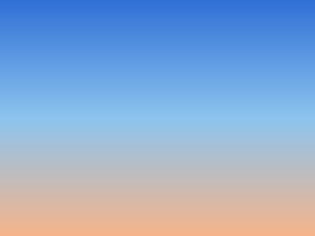

A sky worth recording
Get started
Panels that keep their gradients
The capture should keep the gradients behind the flat colours, not only their average, and the picture under the hero.

The capture should keep the gradients behind the flat colours, not only their average, and the picture under the hero.